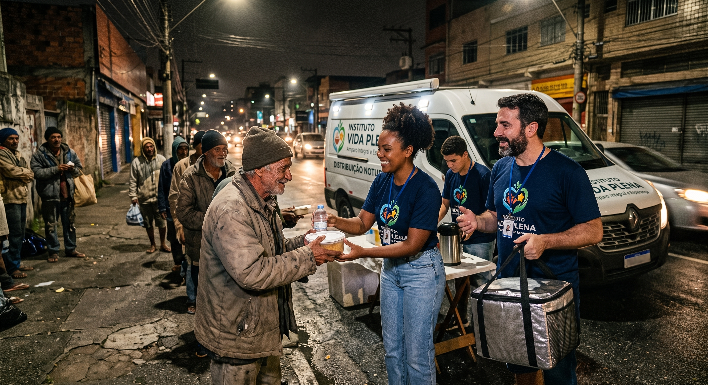
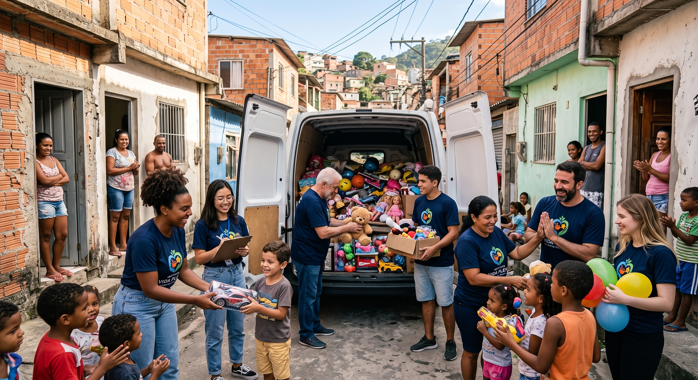
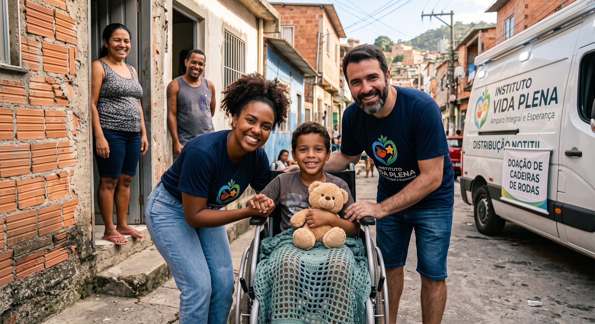
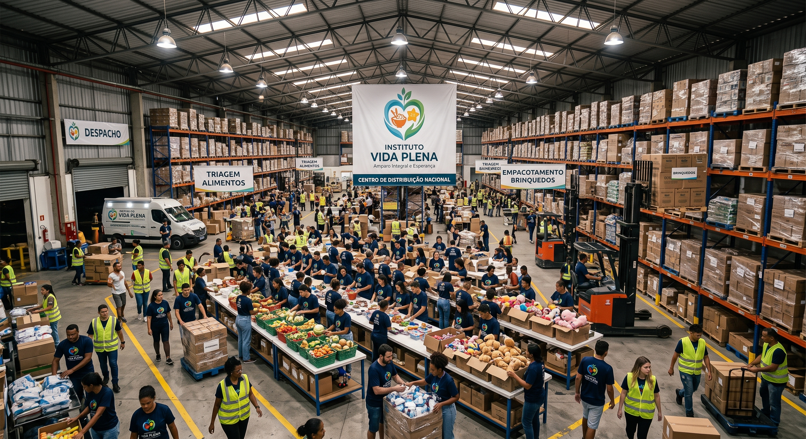

PROJETOS QUE TRANSFORMAM VIDAS
A transformação social não acontece em abstrato: ela é construída prato por prato, sorriso por sorriso, vida por vida. No Instituto Vida Plena, nossas iniciativas foram desenhadas para responder com rapidez e eficácia às vulnerabilidades mais críticas das ruas e das comunidades periféricas.
Conheça em detalhes cada uma das nossas frentes de trabalho, entenda como gerimos nossas campanhas e descubra como você pode somar forças à nossa equipe.
Nossas Frentes de Ação Contínua
1. Nutrir com Dignidade

- O foco: Combate à fome imediata e amparo humanizado à população em situação de rua.
- Como funciona: Semanalmente, organizamos rondas noturnas para levar refeições balanceadas, água mineral e kits básicos de higiene diretamente às pessoas que vivem nas calçadas. Mais do que entregar alimento, nossas equipes dedicam tempo para a escuta qualificada, identificando outras carências críticas (como documentação perdida ou enfermidades visíveis).
- Impacto: Mais de 1.200 marmitas distribuídas mensalmente com padrão nutricional adequado e respeito integral à dignidade humana.
2. Sorriso de Criança

- O foco: Garantia do direito de brincar, afeto e suporte ao desenvolvimento infantil em áreas de extrema vulnerabilidade e abrigos.
- Como funciona: Realizamos mutirões permanentes de coleta, triagem e higienização de brinquedos novos e seminovos. Além das distribuições massivas em datas simbólicas (Dia das Crianças e Natal), mantemos entregas regulares integradas a atividades lúdicas e recreativas em comunidades parceiras.
- Impacto: Dezenas de comunidades atendidas e milhares de brinquedos entregues, resgatando a imaginação e a esperança de quem enfrenta privações desde a primeira infância.
3. Fundo Cura & Vida

- O foco: Suporte financeiro e logístico para pessoas em situação de vulnerabilidade que necessitam de intervenções médicas urgentes.
- Como funciona: Nossa equipe faz a triagem de casos graves onde a espera pelo sistema público convencional coloca a vida do paciente em risco iminente. Mobilizamos recursos para custear exames diagnósticos de alta complexidade, compra de medicamentos de uso contínuo ou alto custo, insumos ortopédicos (cadeiras de rodas, órteses) e, quando necessário, procedimentos cirúrgicos prioritários.
- Impacto: Dezenas de vidas preservadas e famílias desoneradas do desespero de não terem como pagar pelo tratamento de seus entes queridos.
Como Funcionam Nossas Campanhas de Doação
A confiança é o pilar de cada conquista do Instituto. Por isso, a captação de recursos segue critérios rigorosos de transparência e destinação dirigida:
- Campanhas Gerais: As doações livres (feitas via Pix, transferência bancária ou cartão) financiam a compra de ingredientes a preço de atacado para as cozinhas solidárias, embalagens térmicas e manutenção da logística das vans de entrega.
- Campanhas Temáticas e Sazonais: Períodos com metas específicas (como a arrecadação de brinquedos de fim de ano ou compra de agasalhos de inverno).
- Campanhas de Saúde com Finalidade Vinculada: Nos casos do Fundo Cura & Vida, abrimos vaquinhas ou destinações direcionadas a pacientes específicos. Cada centavo arrecadado para um caso médico é faturado diretamente junto a farmácias, clínicas e fornecedores credenciados, sem intermediações.
Seja um Voluntário: Faça Parte da Linha de Frente

Nenhum projeto se sustenta sem braços dispostos a agir. Ser voluntário no Instituto Vida Plena é uma oportunidade de colocar suas habilidades — e seu coração — a serviço de quem mais precisa.
Temos vagas abertas nas seguintes áreas de voluntariado:
- Cozinha e Montagem: Preparo dos alimentos, montagem cuidadosa das marmitas e organização dos kits de talheres e água.
- Equipe de Ronda e Logística: Transporte e entrega noturna das refeições nas ruas, triagem e distribuição dos brinquedos nas comunidades.
- Acolhimento e Escuta: Voluntários com perfil empático para atuar na recepção de famílias, escuta de pessoas em situação de rua e mapeamento de demandas de saúde.
- Triagem de Doações: Organização, higienização e embalagem de brinquedos e roupas no nosso galpão de triagem.
- Apoio Técnico e Operacional: Profissionais e estudantes de tecnologia, comunicação, design, psicologia, assistência social e medicina que possam dedicar algumas horas mensais às nossas rotinas internas.
Para se juntar a nós, acesse a página de Cadastro, escolha a modalidade em que deseja colaborar e aguarde o contato de nossa coordenação para o próximo encontro de integração de novos voluntários.